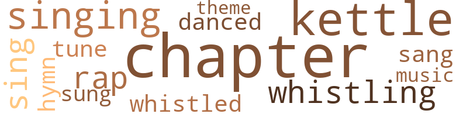
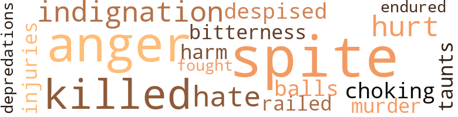
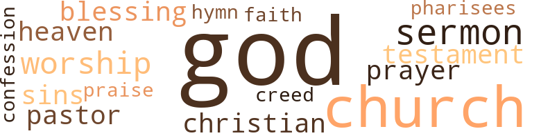

Clarence and Corinne, by Johnson, A.E. (1988)
28 music-related terms matched in this text.
Most frequent terms in this topic: chapter (6); kettle (4); singing (3); whistling (2); rap (2)
chapter.n.01
Definition: a subdivision of a written work; usually numbered and titled
| word | sentence |
|---|---|
| chapter | Rising from her knees , she opened her little Testament and read a chapter . |
| chapter | One day he went to look at the old home , but found it and an adjoining old house gone , and the pretty dwelling noticed at the commencement of this chapter built where they stood . |
| chapter | There is sorrow as well as joy in our closing chapter . |
| chapter | When Corinne asked if she should read a chapter in the Bible , she gave a cold and indifferent assent ; and the only comment she made , when the reading was done , was to say it was " mighty queer how things turned out well for some folks , and ill for others " ; which remark showed that she had paid but little attention to the blessed words Corinne had been reading : " Let not your heart be troubled , " etc . |
| chapter | In the afternoon , after everything was cleared up , she made the child , who had just begun to read a little , take the Bible and read aloud a chapter . |
| chapter | And once , when she took the big Bible that was down stairs to read the usual Sunday afternoon chapter , she had asked Miss Rachel if she might read one of her favorite chapters instead . |
| chapters | And once , when she took the big Bible that was down stairs to read the usual Sunday afternoon chapter , she had asked Miss Rachel if she might read one of her favorite chapters instead . |
dance.v.03
Definition: skip, leap, or move up and down or sideways
| word | sentence |
|---|---|
| danced | The sun was shining in through the windows , and lighted up the floor and the table set for tea , and danced to and fro on the walls . |
hymn.n.01
Definition: a song of praise (to God or to a saint or to a nation)
| word | sentence |
|---|---|
| hymn | When the hour for service arrived , the pastor , a tall , middle-aged gentleman , with benevolence and kindly feeling beaming in his genial counte - nance , read the opening hymn , which was sung by the congregation , with no accompaniment save the music of the birds outside the open windows . |
kettle.n.04
Definition: a large hemispherical brass or copper percussion instrument with a drumhead that can be tuned by adjusting the tension on it
| word | sentence |
|---|---|
| kettle | A wood fire was crackling on the hearth , and the kettle sang merrily . |
| kettle | Light up a fire , will you , and set the kettle on , while I lay the table . " |
| kettle | In a short time he had the fire crackling and sputtering , and the kettle filled with water and on the stove . |
| kettle | When the good woman made her appearance , the kettle was noisily singing , and the table set for breakfast . |
music.n.01
Definition: an artistic form of auditory communication incorporating instrumental or vocal tones in a structured and continuous manner
| word | sentence |
|---|---|
| music | When the hour for service arrived , the pastor , a tall , middle-aged gentleman , with benevolence and kindly feeling beaming in his genial counte - nance , read the opening hymn , which was sung by the congregation , with no accompaniment save the music of the birds outside the open windows . |
rap.n.05
Definition: genre of African-American music of the 1980s and 1990s in which rhyming lyrics are chanted to a musical accompaniment; several forms of rap have emerged
| word | sentence |
|---|---|
| rap | The hoy , relieved by having given vent to some of the bitterness that had been pent up in his bosom for so long , now burst into tears , and the brother and sister wept together until they were aroused by a rap on the door . |
| rap | Corinne cried for a while as if her heart would break , and the tears were still falling when she was startled by a rap on the door . |
sing.v.02
Definition: produce tones with the voice
| word | sentence |
|---|---|
| sang | A wood fire was crackling on the hearth , and the kettle sang merrily . |
| sung | When the hour for service arrived , the pastor , a tall , middle-aged gentleman , with benevolence and kindly feeling beaming in his genial counte - nance , read the opening hymn , which was sung by the congregation , with no accompaniment save the music of the birds outside the open windows . |
| sing | Charley Reade , the minister 's little son , often said that the birds liked to come to church on Sundays , and sing with the people . |
| sing | Whether this was so or not , sing they did , with all the power in their tiny throats . |
singing.n.01
Definition: the act of singing vocal music
| word | sentence |
|---|---|
| singing | And then they all passed in , and the sounds of the worship within mingled with the sounds of the worship without - the souuds of the rustling in the trees , and the singing of birds , and the humming of bees as they went from flower to flower . |
| singing | The winter had indeed passed for her , and the time of the singing of birds had come . |
| singing | When the good woman made her appearance , the kettle was noisily singing , and the table set for breakfast . |
theme.n.03
Definition: (music) melodic subject of a musical composition
| word | sentence |
|---|---|
| theme | The sermon was simple , forcible , plain , practical , and was delivered in tones that showed that the speaker 's sole aim was to reach the hearts of his hearers , and press home uj > on them the truths contained in his theme . |
tune.n.01
Definition: a succession of notes forming a distinctive sequence
| word | sentence |
|---|---|
| tune | He and his companion soon left this quiet neighborhood far behind for some tune they walked on in silence , then Clarence asked , anxiously : " You do n't believe I took that money , do you ? " |
whistle.v.01
Definition: make whistling sounds
| word | sentence |
|---|---|
| whistled | " Whew ! " whistled her new acquaintance . |
| whistling | Then away he went , whistling merrily . |
| whistling | And Charley walked off whistling , while Bebe , in obedience to a call from Aunt Patty , went into the house . |
27 violence-related terms matched in this text.
Most frequent terms in this topic: spite (4); anger (3); hate (2); indignation (2); hurt (2)
anger.n.01
Definition: a strong emotion; a feeling that is oriented toward some real or supposed grievance
| word | sentence |
|---|---|
| anger | Clarence , trembling now with anger , hurried out and closed the door . |
| anger | " Well , if you behave yourself , I will , " replied Charley , too eager to tell to even feign anger long . |
| anger | Instead of being grateful for having escaped the punishment he so richly deserved , knowing that Clarenoe could have brought it upon him had he so pleased , Sam was filled with anger at the unoffending boy , which was fanned to still greater heat by the praise bestowed upon him by his employers , and he determined never to rest until he had placed Clarence in a position that would prevent even the possibility of his ever telling of him . |
contemn.v.01
Definition: look down on with disdain
| word | sentence |
|---|---|
| Despised | Despised again ! |
depredation.n.01
Definition: an act of plundering and pillaging and marauding
| word | sentence |
|---|---|
| depredations | The men who had attempted the robbery were found guilty of having committed other depredations , and had been dealt with accordingly . |
fight.v.02
Definition: fight against or resist strongly
| word | sentence |
|---|---|
| fought | The children went to school as long as their clothes lasted ; and , be it said to her credit , their mother did mend and fix over their scanty wardrobe as long as it could be done , and some of the hottest battles between the wretched pair were fought that she might obtain decent clothing for them . |
gag.v.06
Definition: cause to retch or choke
| word | sentence |
|---|---|
| choking | It was Sam Baker , who chuckled with glee as his victim paused and said , in a choking voice : " Yes , you are more than a thief , and you know it ! " |
hate.v.01
Definition: dislike intensely; feel antipathy or aversion towards
| word | sentence |
|---|---|
| hate | " Now that 's just it , Corinne , '' he said , " if it was n't for you , I 'd go to-morrow ; but I do hate to leave you . |
| hate | I most hate to tell you . " |
indignation.n.01
Definition: a feeling of righteous anger
| word | sentence |
|---|---|
| indignation | Great was her astonishment and deep her indignation when she found how matters stood at the cottage ; and she was loud in her denunciations of " that heartless Jim Burton . " |
| indignation | Besides , Charley Reade , " continued the little maiden , almost out of breath with indignation and her long speech , " besides , your father has taught you better than to talk that way . " |
injury.n.01
Definition: any physical damage to the body caused by violence or accident or fracture etc.
| word | sentence |
|---|---|
| harm | Charley , aged eleven years , was rather inclined to be mischievous ; but , as Aunt Patty was wont to say , there was n't " a bit of harm in the lad ; lie 's only a healthy . |
| injuries | He found that she was more seriously hurt than he had at first thought , having received internal injuries , besides having hurt her back and head by striking against the cellar steps . |
kill.v.10
Definition: cause the death of, without intention
| word | sentence |
|---|---|
| killed | Yes , drink ruined our father , and now it 's killed our mother ; and nobody cares for us because we 're the children of a drunkard . |
| killed | If he ai n't killed that poor woman outright , he 's done it by inches . |
malice.n.01
Definition: feeling a need to see others suffer
| word | sentence |
|---|---|
| spite | When the hour of parting came , she bravely bade Mary good-bye , striving hard to keep back the tears , that in spite of all her efforts would fall when the gentle girl drew her face down and kissed it , bidding her " be a good girl , and try hard to get well and strong , and be happy , " at the same time putting into her hands a small Testament , saying : " Read it often , dear ; you will find it a great comfort . |
| spite | Corinne turned and looked at her questioner , and , in spite of her low spirits , she could not help an amused smile which crept over her face , when her eyes fell upon the odd-looking lad who stood before her with his hands in his pockets , and a perfectly self-satisfied expression on his countenance . |
| spite | The pure country air was beginning already to benefit her ; for , in spite of the trying experiences of the day , she felt stronger and better than she had done for a long time . |
| spite | Something in her voioe made Clarence halt , in spite of himself , although he felt as if he would like very much to run away as fast as he could . |
murder.n.01
Definition: unlawful premeditated killing of a human being by a human being
| word | sentence |
|---|---|
| murder | " No wonder he was moving off so fast , he 's likely to be took up for murder . |
musket_ball.n.01
Definition: a solid projectile that is shot by a musket
| word | sentence |
|---|---|
| balls | There were stately , handsome cocks , staid , motherly hens , saucy little bantams , and wee balls of baby chicks . |
pain.v.02
Definition: cause emotional anguish or make miserable
| word | sentence |
|---|---|
| hurt | He found that she was more seriously hurt than he had at first thought , having received internal injuries , besides having hurt her back and head by striking against the cellar steps . |
| hurt | Has anybody hurt you ? " |
resentment.n.01
Definition: a feeling of deep and bitter anger and ill-will
| word | sentence |
|---|---|
| bitterness | The hoy , relieved by having given vent to some of the bitterness that had been pent up in his bosom for so long , now burst into tears , and the brother and sister wept together until they were aroused by a rap on the door . |
twit.n.02
Definition: aggravation by deriding or mocking or criticizing
| word | sentence |
|---|---|
| taunts | Clarence was not an idle boy by nature , and he had tried to get work , and did work when he could get it to do ; but with all his poverty he was very proud , and could not brook the sneers and taunts of those with whom he came in contact ; so he was not very fortunate in finding employment . |
vilify.v.01
Definition: spread negative information about
| word | sentence |
|---|---|
| railed | " Heigho , what 's the news ? " railed the irrepressible Charley . |
weather.v.01
Definition: face and withstand with courage
| word | sentence |
|---|---|
| endured | They found him altogether too economical to suit their fancy , so they contented themselves with calling him names and poking fun at him , all of which Clarence endured good-naturedly . |
61 religion-related terms matched in this text.
Most frequent terms in this topic: God (18); church (16); sermon (4); worship (3); Testament (2)
blessing.n.05
Definition: the act of praying for divine protection
| word | sentence |
|---|---|
| blessings | As she sat thus and thought over the past , with its many hardships and discouragements , and on the present , with new and unlooked-for blessings that threw a bright and hopeful light upon the future , the sensitive child was entirely overcome ; and , throwing herself upon her knees by her bedside , she sobbed out her gratitude to the Father above , whose guiding hand had led her through hidden paths ; and she resolved that , with his uid , she would never let one act of hers bring uneasiness or care to the kind friends whom she already loved dearly . |
| blessing | Then , having prepared for rest , she again knelt and prayed that she might be kept through the night ; and she prayed for a blessing upon those with whom her lot was cast . |
christian.n.01
Definition: a religious person who believes Jesus is the Christ and who is a member of a Christian denomination
| word | sentence |
|---|---|
| Christian | After a little more talk about the school , Bebe asked , softly : " Corinne , are you a Christian ? " |
| Christian | But she was nut a Christian , and , therefore , lived as one without hope . |
church.n.02
Definition: a place for public (especially Christian) worship
| word | sentence |
|---|---|
| church | Corinne helped clear away the breakfast things when the morning repast was finished ; and then Aunt Anna said it was time to get ready for church . |
| church | It was not far away , - the church which they attended , - and they could see its white , inviting appearance as they looked across the green fields . |
| church | Pleasant greetings they exchanged , as they met at the church door , for the work of the week kept them from seeing much of each other at other times . |
| church | Now , Clarence had thought hut little of God ; had never eared lor Sunday-school or church , and never read the Bible ; indeed , there was none in the cottage for him to read , had he been so inclined . |
| church | The little church was , as we have said , only a little way from Sweetbrier Farm , and what a delight it was to walk there , through shady lanes and grassy meadows , taking now and then a " short cut " through the grounds of a friendly neighbor , passing beneath the rustling boughs of the trees in the grove , then out again in the bright , beautiful sunlight . |
| church | As they neared the small but neat frame church , they met little groups of people , all wending their way in the same direction , many of them coming from long distances . |
| church | Some passed them in buggies , some in wagons , some in clumsy carts , but all intent on going to church . |
| church | Charley Reade , the minister 's little son , often said that the birds liked to come to church on Sundays , and sing with the people . |
| church | Then the little church looked so neat and pretty , with its dove-colored walls and dark-brown pews , while through the open windows came the soft , sweet breeze , and the trees that stood around cast shadows of their dancing leaves upon the sunlit crimson carpet and against the wall . |
| church | Corinne , somewhat taken aback at such a cordial greeting from a stranger , still had sufficient self-possession to return the friendly squeeze Belie had given her hand , and as the congregation moved slowly out of the church , Aunt Anna Stone noticed with satisfaction that the two little girls walked out with their arms about each other . |
| church | Mr , Reade , having talked farm and church business with Mr. Stone to his heart 's content , was now quite ready to go . |
| church | Mr. Reade is still pastor of the little church at Brierton . |
| church | " God 's ways are not our ways , " repeated Corinne , softly , as she and Clarence walked slowly home from church one bright Sunday . |
| church | She considered when she had done this that her duty was done , so far as church was concerned . |
church.n.04
Definition: the body of people who attend or belong to a particular local church
| word | sentence |
|---|---|
| church | She invariably attended church in the morning , rain or shine , snow or blow . |
| church | Willingly and swiftly did Corinne perform her tasks while Miss Rachel was at church , taking especial care to do them just as well as she could . |
confession.n.05
Definition: the document that spells out the belief system of a given church (especially the Reformation churches of the 16th century)
| word | sentence |
|---|---|
| confession | Mr. Emory , long before , had found out , through the confession of Sam Baker , that Clarence was innocent of the deed of which he had believed him guilty ; but he could find no trace of the boy to tell him so . |
creed.n.01
Definition: any system of principles or beliefs
| word | sentence |
|---|---|
| creed | For a while neither spoke ; but silence for any great length of time not having a place in good Mrs. Stone 's creed , she soon broke it by asking the little girl a host of questions about her friends Helen and Mary Gray , reciprocating by telling many little incidents of their visit to Sweetbrier Farm , the previous summer . |
curate.n.01
Definition: a person authorized to conduct religious worship
| word | sentence |
|---|---|
| pastor | When the hour for service arrived , the pastor , a tall , middle-aged gentleman , with benevolence and kindly feeling beaming in his genial counte - nance , read the opening hymn , which was sung by the congregation , with no accompaniment save the music of the birds outside the open windows . |
| pastor | Mr. Reade is still pastor of the little church at Brierton . |
eden.n.01
Definition: any place of complete bliss and delight and peace
| word | sentence |
|---|---|
| heaven | Kneeling beside her bed , as she had done the night before , and as she had not failed to do since she had found out that she had a Father in heaven , to whom she might go at all times , and to whom she was indebted for all the good she received , she offered her morning prayer of thanksgiving to that Father for his protection during the night ; adding a petition for help to live aright during the day , as her invalid friend had taught her . |
| heaven | " I love the country too " - her voice taking on a low , reverent tone as she spoke - " it always seems to me as if God and heaven are nearer to us in the country than anywhere else . " |
god.n.03
Definition: a man of such superior qualities that he seems like a deity to other people
| word | sentence |
|---|---|
| God | " God 's way once again ! " said Helen , after reading the cordial letter aloud . |
| God | Do n't you know that our wavs are in God 's hands ? |
| God | Motives will measure , and God will judge . |
| God | She knew nothing of the chequered scenes through which he was passing , but God knew ; and none can tell how much her prayers availed for her poor , struggling brother . |
| God | Truly , on such a morning , and amid such surroundings , it is fitting and natural that the holiest and best thoughts in one should be brought into play ; and Corinne 's heart swelled with emotion , and her lips could do nothing but murmur thanks to the God who had led her feet through paths she knew not of , to such a haven of rest . |
| God | " I love the country too " - her voice taking on a low , reverent tone as she spoke - " it always seems to me as if God and heaven are nearer to us in the country than anywhere else . " |
| God | As he lay there on his humble pallet , after the lights were out and all was still , the words of his new friend came to him : " Are you one of God 's children ? |
| God | He was contracting his mode of righting things with God 's way . |
| God | So , when he came to L ----- , and obtained employment in Mr. Emory 's establishment , with the prospect of advancement before him , he was delighted , and his way was to remain there ; but circumstances proved that this was not God 's way . |
| God | He confessed his sins and asked earnestly to be forgiven , and then and there gave himself to God . |
| God | " I believe you , my boy , " she said , wiping her eyes , " but it 's all God 's doing . |
| God | " Just see how God works ! |
| God | " Anna , " continued the good man , " I believe that God means that we shall rear these two children ; else why should they be led right here to our door so miraculously ? " |
| God | " God 's ways are not our ways , " repeated Corinne , softly , as she and Clarence walked slowly home from church one bright Sunday . |
| God | " God 's ways are not our ways . " |
| God | God is his own interpreter , And he will make it plain . " |
| God | She had gone without a word , and none save God knew aught of her last moments . |
| God | All things are possible with God , ' " quoted her friend . |
hymn.n.01
Definition: a song of praise (to God or to a saint or to a nation)
| word | sentence |
|---|---|
| hymn | When the hour for service arrived , the pastor , a tall , middle-aged gentleman , with benevolence and kindly feeling beaming in his genial counte - nance , read the opening hymn , which was sung by the congregation , with no accompaniment save the music of the birds outside the open windows . |
pharisee.n.02
Definition: a member of an ancient Jewish sect noted for strict obedience to Jewish traditions
| word | sentence |
|---|---|
| Pharisees | A woman of few words was Miss Rachel ; one who was " willing to do her duty , " as she expressed it , but it was dune much after the manner of the Pharisees : her deeds were done to be seen of men . |
praise.n.02
Definition: offering words of homage as an act of worship
| word | sentence |
|---|---|
| praise | Instead of being grateful for having escaped the punishment he so richly deserved , knowing that Clarenoe could have brought it upon him had he so pleased , Sam was filled with anger at the unoffending boy , which was fanned to still greater heat by the praise bestowed upon him by his employers , and he determined never to rest until he had placed Clarence in a position that would prevent even the possibility of his ever telling of him . |
prayer.n.01
Definition: the act of communicating with a deity (especially as a petition or in adoration or contrition or thanksgiving)
| word | sentence |
|---|---|
| prayers | She knew nothing of the chequered scenes through which he was passing , but God knew ; and none can tell how much her prayers availed for her poor , struggling brother . |
| prayer | It was most pleasantly situated , and in itself it seemed a call to prayer to all the country for miles around . |
religion.n.01
Definition: a strong belief in a supernatural power or powers that control human destiny
| word | sentence |
|---|---|
| faith | But she had great faith in her brother and whatever he did ; so she concluded that it was all right They moved out of the old home into the new , and then Clarence went away ; and when he returned , brought with him Mr. Reade , Bebe , and Charley . |
sermon.n.02
Definition: a moralistic rebuke
| word | sentence |
|---|---|
| sermon | The sermon was simple , forcible , plain , practical , and was delivered in tones that showed that the speaker 's sole aim was to reach the hearts of his hearers , and press home uj > on them the truths contained in his theme . |
| sermon | The sermon was so simple and plain , that Corinne had no difficulty in understanding it all , and she thoroughly enjoyed it . |
| sermon | The words she quoted had been the substance of the sermon to which they had listened that morning . |
| sermon | like the man in the Lord 's sermon , she had built upon the sand . |
sin.n.06
Definition: violent and excited activity
| word | sentence |
|---|---|
| sins | " ' Though your sins be as scarlet , they shall be as white as snow , ' " quoted the good old woman . |
| sins | He confessed his sins and asked earnestly to be forgiven , and then and there gave himself to God . |
testament.n.01
Definition: a profession of belief
| word | sentence |
|---|---|
| Testament | Rising from her knees , her thoughts turned to the friends she had left ; and , taking the little Testament that had been the parting gift of her beloved " Miss Mary " from her pocket , she opened it lovingly at the familiar place , which was marked by a tiny blue ribbon , and a bright smile spread over her features as she read the words she loved so much , and of which she never grew tired : " Casting all your care upon him ; for he careth for you . " |
| Testament | Rising from her knees , she opened her little Testament and read a chapter . |
worship.n.01
Definition: the activity of worshipping
| word | sentence |
|---|---|
| worship | Their work was laid aside , and they gathered for worship . |
| worship | And then they all passed in , and the sounds of the worship within mingled with the sounds of the worship without - the souuds of the rustling in the trees , and the singing of birds , and the humming of bees as they went from flower to flower . |
| worship | And then they all passed in , and the sounds of the worship within mingled with the sounds of the worship without - the souuds of the rustling in the trees , and the singing of birds , and the humming of bees as they went from flower to flower . |